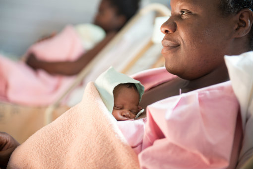

TÓPICO 5: COMO AJUDAR O MEU FILHO OU FILHA DURANTE UM PROCEDIMENTO
DOLOROSO E/OU ESTRESSANTE?
Durante o procedimento:
- É muito importante que após o procedimento seu filho ou filha permaneça em
contato pele a pele no mínimo uma hora.
-
Não se preocupem! A equipe de saúde está treinada para orientar vocês de
maneira segura.
